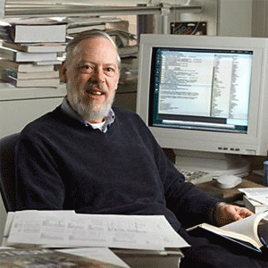

// memory, pointers, and the machine beneath

The American computer scientist who created C at AT&T Bell Labs in 1972. Known as the "Father of Modern Computing," his work on C and UNIX laid the foundation for Windows, macOS, and Android. Turing Award recipient, 1983.
C is a compiled language — source code is translated directly into machine-level binary. This makes it dramatically faster than interpreted languages. The 4 stages:
The #include <stdio.h> directive includes the Standard Input Output library, enabling printf() and scanf().
#include <stdio.h>
int main() {
printf("Welcome to C");
return 0; // Signals successful completion
}
Write the line to include the Standard Input Output header:
C is statically typed — you must declare the type before using a variable, so the compiler reserves exact RAM:
Declare a float variable named price set to 19.99 (include the semicolon):
A pointer stores the memory address of another variable. & gets the address; * declares a pointer. This is what makes C so powerful — direct hardware and memory manipulation.
Declare a pointer to an integer named ptr:
A for loop has three parts: initialization, condition, and increment. Used when the number of iterations is known in advance.
Write the for loop header to run exactly 5 times starting from 0: